2022年北京市中考化学真题 原卷解析
2022年北京市初中学业水平考试
化学试卷
可能用到的相对原子质量：H1 C12 O16 Cl35.5 Ca 40
第一部分
本部分共25题，每题1分，共25分。在每题列出的四个选项中，选出最符合题目要求的一项。
化学与生话、生产息息相关。回答1~9题。
1. 下列自行车构件及配件所用的材料中，属于金属材料的是
A. 塑料车筐B. 橡胶车胎C. 钢制车圈D. 棉布座套
【答案】C
【解析】
【详解】A、塑料车筐用塑料制成，塑料属于合成材料；
B、橡胶车胎由橡胶制成，橡胶属于有机高分子材料；
C、钢制车圈由钢制成，钢是合金属于金属材料；
D、棉布座套由棉制成，棉属于天然材料。
故选C。
2. 下列生活用品，利用金属导电性的是
A. 铁锅B. 铜导线C. 铝箔包装纸D. 金饰品
【答案】B
【解析】
【详解】A、铁锅主要利用金属的导热性，不符合题意；
B、铜导线主要利用的是金属的导电性，符合题意；
C、铝箔包装纸主要利用的是金属的延展性和导热性，不符合题意；
D、金饰品主要利用的 是金属的延展性，不符合题意。
故选B。
3. 一些食物的pH范围如下，其中酸性最强的是
A. 橘子汁(3-4)B. 西瓜汁(5-6)C. 牛奶(6~7)D. 鸡蛋清(7~8)
【答案】A
【解析】
【详解】A、橘子汁的pH为3-4，显酸性；
B、西瓜汁 pH为5-6，显酸性；
pH为5-6，显酸性；
C、牛奶的pH为6~7，显弱酸性；
D、鸡蛋清的pH为7~8，显碱性；
pH小于7，显酸性，pH值越小，酸性越强。
故选A。
4. 垃圾分类人人有责。香蕉皮属于
A. 可回收物B. 其他垃圾C. 厨余垃圾D. 有害垃圾
【答案】C
【解析】
【详解】A、可回收垃圾包括废旧金属、纸张等，不符合题意；
B、其他垃圾指危害比较小，没有再次利用的价值的垃圾，如建筑垃圾，生活垃圾等，不符合题意；
C、厨余垃圾是指居民日常生活及食品加工、饮食服务、单位供餐等活动中产生的垃圾，包括丢弃不用的菜叶、剩菜、剩饭、果皮等，香蕉皮属于厨余垃圾，符合题意；
D、有害垃圾指对人体健康或者自然环境造成直接或者潜在危害生活的废弃物等，不符合题意
故选：C。
5. 人体每日需要摄入适量的钙，这里的“钙”指的是
A. 元素B. 单质C. 分子D. 原子
【答案】A
【解析】
【详解】物质是由元素组成。人体每日需要摄入适量的钙，这里的“钙”指的是钙元素。
故选：A。
6. 化肥对提高农作物的产量具有重要作用。下列物质能用作钾肥的是
A. K2SO4B. CO(NH2)2C. NH4ClD. Ca(H2PO4)2
【答案】A
【解析】
【详解】A、硫酸钾含钾元素，属于钾肥，符合题意；
B、尿素含氮元素，属于氮肥，不符合题意；
C、氯化铵含氮元素，属于铵态氮肥，不符合题意；
D、磷酸二氢钙含磷元素，属于磷肥，不符合题意。
故选：A。
【点睛】根据化肥的所含元素进行分类，主要是辨识化肥的元素组成中氮、磷、钾元素解题。
7. 化石燃料是不可再生的能源，下列不属于化石燃料的是
A. 煤B. 石油C. 乙醇D. 天然气
【答案】C
【解析】
【详解】化石燃料包括煤、石油和天然气。乙醇不是化石燃料，故选C。
8. 赤铁矿(主要成分是Fe2O3)用于工业炼铁。Fe2O3中铁元素的化合价为
A. -3B. -2C. +2D. +3
【答案】D
【解析】
【详解】根据化合物中正负化合价代数和为零，Fe2O3中氧元素的化合价为-2价，则设铁元素的化合价为x，
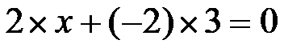
，解得x=+3，故选D。9. 下列灭火措施不正确的是
A. 森林起火，开辟隔离带B. 电线老化短路起火、用水浇灭
C. 炒菜时油锅中的油不慎着火，用锅盖盖灭D. 酒精灯洒出的酒精在桌上燃烧，用湿布盖灭
【答案】B
【解析】
【详解】A、森林起火，开辟隔离带，能够使可燃物与正在燃烧的物质隔离，起到灭火的目的，选项正确；
B、电线老化短路起火，应先切断电源，不能用水浇灭，会引起触电，选项错误；
C、炒菜时油锅中的油不慎着火，用锅盖盖灭，起到隔绝空气从而达到灭火的目的，选项正确；
D、酒精灯洒出的酒精在桌上燃烧，由于酒精能与水以任意比例混合，故不能用水浇灭，用湿布盖灭起到隔绝空气的作用从而灭火，选项正确；
故选：B。
氧在自然界中广泛存在。回答下列3个小题。
10. 空气中氧气的体积分数约为（ ）
A. 78%B. 21%C. 0.94%D. 0.03%
【答案】B
【解析】
【详解】根据空气的组成判断，空气的成分按体积计算，大约是氮气78%、氧气21%、稀有气体0.94%、二氧化碳0.03%、其它气体和杂质0.03%。故选B。
11. 下列符号中，表示两个氧原子的是
A. O2B. 2OC. O2-D. 2O2
【答案】B
【解析】
【详解】A、表示1个氧分子，或表示氧气；故选项错误；
B、表示2个氧原子；故选项正确；
C、表示1个氧离子；故选项错误；
D、表示2个氧分子；故选项错误；
故选：B
12. 下列氧气的性质中，属于化学性质的是
A. 无色无味B. 沸点低C. 能支持燃烧D. 不易溶于水
【答案】C
【解析】
【分析】通过化学变化来表现出来的性质叫化学性质，不需要通过化学变化就能表现出来的性质属于物理性质，据此判断。
【详解】A、氧气无色无味，不需要通过化学变化就能表现出来，属于物理性质，不符合题意；
B、氧气沸点低，不需要通过化学变化就能表现出来，属于物理性质，不符合题意；
C、物质在氧气中燃烧属于化学变化，故氧气支持燃烧属于化学性质，符合题意；
D、氧气不易溶于水不需要通过化学变化就能表现出来，属于物理性质，不符合题意；
故选：C。
【点睛】区分物质的性质属于物理性质还是化学性质，关键是看这条性质是否需要通过化学变化表现出来。
13. 下列不属于氧气用途的是
A. 气焊B. 食品防腐C. 供给呼吸D. 医疗急救
【答案】B
【解析】
【详解】A、氧气具有助燃性，可用于气焊，不符合题意；
B、食品中的物质能与氧气发生缓慢氧化，而腐败，氧气不能防腐，符合题意；
C、氧气具有氧化性，能供给呼吸，不符合题意；
D、氧气能供给呼吸，可用于医疗急救，不符合题意。
故选B。
14. 下列操作不正确的是
A. 检查气密性 B. 倾倒液体
B. 倾倒液体
C. 加热液体 D. 取用固体粉末
D. 取用固体粉末
【答案】B
【解析】
【详解】A、检查气密性：将导管置于水中，用手紧握试管，观察导管口是否有气泡冒出，有气泡冒出，说明装置气密性良好，不符合题意；
B、倾倒液体时，瓶塞应倒放，瓶口应紧挨，标签应朝向手心处，图中瓶塞未倒放，瓶口未紧挨，符合题意；
C、给试管中的液体加热时，应用外焰加热，且试管里的液体不能超过试管容积的1/3，图中操作正确，不符合题意；
D、往试管里装入固体粉末时，为避免药品沾在管口和管壁上，可先使试管倾斜，把盛有药品的药匙（或用小纸条折叠成的纸槽）小心地送至试管底部，然后使试管直立起来。图中操作正确，不符合题意。
故选B。
15. 下列物质放入水中能形成溶液的是
A. 蔗糖B. 泥土C. 面粉D. 花生油
【答案】A
【解析】
【分析】溶液是均一、稳定的混合物；溶液的本质特征是均一性、稳定性，属于混合物。
【详解】A、蔗糖易溶于水，能和水形成均一、稳定的混合物，即能和水形成溶液，故选项正确；
B、泥土不溶于水，不能和水形成均一、稳定的混合物，泥土和水形成的混合物属于悬浊液，故选项错误；
C、面粉不溶于水，不能和水形成均一、稳定的混合物，面粉和水形成的混合物属于悬浊液，故选项错误；
C、花生油不溶于水，不能和水形成均一、稳定的混合物，即不能和水形成溶液，成的混合物属于乳浊液，故选项错误。
故选：A。
16. 下列物质露置于空气中一段时间，质量会减少的是
A. 浓盐酸B. 大理石C. 浓硫酸D. 氢氧化钠
【答案】A
【解析】
【详解】A、浓盐酸具有挥发性，露置于空气中一段时间后，挥发出氯化氢气体，则溶液质量会减少，符合题意；
B、大理石露置于空气中一段时间质量几乎不变，不符合题意；
C、浓硫酸具有吸水性，露置于空气中一段时间后，会吸收空气中的水，则溶液质量会增多，不符合题意；
D、氢氧化钠露置于空气中一段时间会潮解同时会与空气中二氧化碳反应生成碳酸钠和水而变质，则质量会增加，不符合题意；
故选：A。
【点睛】根据物质的不同性质进行分析。
17. 下列关于水的说法中，不正确的是
A. 水能与氧化钙反应B. 蒸馏是水净化的一种方法
C. 水由氢气和氧气组成D. 硬水和软水可用肥皂水区分
【答案】C
【解析】
【详解】A、水能与氧化钙反应生成氢氧化钙，故说法正确；
B、蒸馏是水净化的一种方法，可除去水中的可溶性杂质和难溶性杂质，故说法正确；
C、水由氢元素和氧元素组成，故说法错误；
D、硬水和软水可用肥皂水区分，泡沫多为软水，泡沫少为硬水，故说法正确；
故选C。
18. 下列说法不正确的是
A. 过氧化氢能分解B. 干冰用于人工降雨
C. 浓硫酸具有腐蚀性D. 熟石灰用于改良碱性土壤
【答案】D
【解析】
【详解】A、过氧化氢能分解产生水和氧气，故说法正确；
B、干冰升华吸热，用于人工降雨，故说法正确；
C、浓硫酸具有腐蚀性，故说法正确；
D、熟石灰呈碱性，能与酸性物质反应，可用于改良酸性土壤，故说法错误。
故选D。
19. 下列方法能区分氮气和二氧化碳两瓶气体的是
A. 闻气味B. 观察颜色
C. 倒入适量澄清的石灰水D. 将燃着的木条伸入集气瓶中
【答案】C
【解析】
【详解】A、氮气和二氧化碳均是没有气味的气体，用闻气味的方法无法鉴别，故选项错误；B、氮气和二氧化碳均是没有颜色的气体，观察颜色无法鉴别，故选项错误；C、二氧化碳能使澄清的石灰水变浑浊，而氮气不能，能鉴别，故选项正确；D、将燃着的木条伸入集气瓶，氮气和二氧化碳均能使木条熄灭的是二氧化碳，无法鉴别，故选项错误。故选C。
化学为航空航天领域的发展提供强有力的支撑。回答下列4个小题。
20. 火箭推进剂涉及的下列元素中，属于金属元素的是
A. HB. NC. OD. Al
【答案】D
【解析】
【详解】A、氢（）的偏旁部首是“气”字头，故属于非金属元素，不符合题意；
B、氮（）的偏旁部首是“气”字头，故属于非金属元素，不符合题意；
C、氧（ ）偏旁部首是“气”字头，故属于非金属元素，不符合题意；
）偏旁部首是“气”字头，故属于非金属元素，不符合题意；
D、铝（）的偏旁部首是“钅”字旁，故属于金属元素，符合题意；
故选：D。
21. 下列火箭推进剂中，属于氧化物的是
A O2B. N2O4C. N2H4D. NH4ClO4
O2B. N2O4C. N2H4D. NH4ClO4
【答案】B
【解析】
【详解】A、O2是由氧元素组成的纯净物，由同种元素组成的纯净物叫单质，O2属于单质不属于氧化物，不符合题意；
B、氧化物由两种元素组成，其中一种元素是氧元素的化合物。N2O4是属于氧化物，符合题意；
C、氧化物由两种元素组成，其中一种元素是氧元素的化合物。N2H4中不含氧元素，不属于氧化物，不符合题意；
D、氧化物由两种元素组成，其中一种元素是氧元素的化合物。NH4ClO4是由四种元素组成，不属于氧化物，不符合题意。
故选：B。
22. 我国北斗导航卫星系统使用了星载氢原子钟。氢在元素周期表中的信息如下图。下列有关氢元素的说法不正确的是

A. 元素符号为HB. 原子序数为1
C. 相对原子质量为1.008gD. 原子中核外电子数为1
【答案】C
【解析】
【详解】A、根据元素周期表中的一格可知，右上角的字母表示元素符号，该元素的元素符号为H；故选项说法正确。
B、根据元素周期表中的一格可知，左上角的数字表示原子序数，该元素的原子序数为1；故选项说法正确。
C、根据元素周期表中的一格可知，汉字下面的数字表示相对原子质量，该元素的相对原子质量为1.008，相对原子质量单位是“1”，不是“克”，故选项说法错误。
D、根据元素周期表中的一格可知，左上角的数字表示原子序数，该元素的原子序数为1；根据原子中原子序数=核电荷数=质子数=核外电子数，则该元素的原子核外电子数为1，故选项说法正确。
故选C。
23. 载入航天器中处理CO2的一种方法为 ，X的化学式为
，X的化学式为
A. LiB. Li2OC. Li2CO3D. LiOH
【答案】C
【解析】
【详解】根据质量守恒定律反应前后原子的种类和个数不变，如题，反应前锂原子、氧原子、碳原子的个数分别是4、8、2，反应后锂原子、氧原子、碳原子的个数分别是0、2、0，则2X中含有4个锂原子、2个碳原子、6个氧原子，则X中含有2个锂原子、1个碳原子、3个氧原子，故化学式是 ，故选：C。
，故选：C。
24. 载人航天器中处理CO2的另一种方法是将CO2与氢气反应，反应前后分子种类变化的微观示意图如下：

下列说法正确的是
A. 乙和丙的元素组成相同B. 丙的相对分子质量为16
C. 反应前后氧原子个数不相等D. 参加反应甲和乙的分子个数比为4:1
【答案】D
【解析】
【分析】根据微观示意图可知该反应是乙即二氧化碳和甲即氢气在一定条件下反应生成水和甲烷，化学方程式为 ，据此解题。
，据此解题。
【详解】A、如图所示，乙是由氧元素和碳元素组成的，丙是由氢元素和氧元素组成的，乙和丙元素组成不同，选项错误；
B、如图所示，丙是水（ ），其相对分子质量是
），其相对分子质量是 ，选项错误；
，选项错误；
C、根据质量守恒定律，反应前后原子的种类和个数不变，反应前后氧原子个数相等，选项错误；
D、根据分析可知，参加反应的甲即氢气和乙即二氧化碳的分子个数比为 ，选项正确。
，选项正确。
故选D。
【点睛】分析出化学方程式是解决此类试题的关键。
25. 下图是硝酸钾和氯化钾的溶解度曲线，下列说法不正确的是

A. 氯化钾的溶解度随温度的升高而增大
B. t1℃时，硝酸钾和氯化钾的溶解度相等
C. 将t1℃时的硝酸钾饱和溶液升温至t2℃，溶质质量不变
D. t2℃时，硝酸钾饱和溶液中溶质与溶剂的质量比为11:21
【答案】D
【解析】
【详解】A、由硝酸钾和氯化钾的溶解度曲线图可知，氯化钾的溶解度随温度的升高而增大，故A正确；
B、由硝酸钾和氯化钾的溶解度曲线图可知，t1℃时，硝酸钾和氯化钾的溶解度曲线相交，硝酸钾和氯化钾的溶解度相等，故B正确；
C、硝酸钾的溶解度随温度的升高而增大，将t1℃时的硝酸钾饱和溶液升温至t2℃，溶质质量不变，故C正确；
D、t2℃时，硝酸钾的溶解度为110g，硝酸钾饱和溶液中溶质与溶剂的质量比为 ，故D不正确。故选D。
，故D不正确。故选D。
第二部分
本部分共13题，共45分。
【生活现象解释】
从A、B两题中任选一个作答，若两题均作答，按A计分。
26. 75%的乙醇(C2H5OH)溶液常用作消毒剂。
（1）C2H5OH属于__________(填“有机化合物”或“无机化合物”)。
（2）C2H5OH中氢原子与氧原子的个数比为___________。
【答案】（1）有机化合物
（2）
【解析】
【小问1详解】
含碳元素的化合物属于有机化合物，乙醇含碳元素故属于有机化合物，故填：有机化合物；
【小问2详解】
根据乙醇的化学式C2H5OH可知，一个乙醇分子中含有2个碳原子、6个氢原子和1个氧原子，则氢原子与氧原子的个数比为，故填：。
27. 3%的过氧化氢溶液可用于伤口消毒。
（1）H2O2属于________(填“纯净物”或“混合物”)。
（2）H2O2中氢元素与氧元素的质量比为___________。
【答案】（1）纯净物 （2）1：16
【解析】
【小问1详解】
H2O2由氢元素和氧元素组成的纯净物，属于化合物，则过氧化氢属于纯净物；
【小问2详解】
H2O2中氢元素与氧元素的质量比为 。
28. 吸附和冷凝是两种从空气中取水的方法。
（1）吸附取水。制备吸附剂时，需要用到氯化锂溶液，该溶液中的溶质是______________。
（2）冷凝取水。水由气态变为液态，其分子间隔______________(填“变小”或“变大”)。
【答案】（1）氯化锂##LiCl （2）变小
【解析】
【小问1详解】
氯化锂溶液，该溶液中的溶质是氯化锂，溶剂是水；
【小问2详解】
气态分子之间间隔大于液态分子之间间隔，水由气态变为液态，其分子间隔变小。
29. 周末，雯雯同学为家人做午餐。
（1）买食材。购买的食材有：土豆、油菜、西红柿、牛肉、鸡蛋，其中富含蛋白质的是______________。
（2）做主食。做馒头时用到小苏打。小苏打的化学式为______________。
（3）做菜。打开燃气灶做菜。天然气的主要成分是______________。
（4）清洁。做完菜，清洗铁锅，擦干放置。擦干的目的是______________。
【答案】（1）牛肉、蛋白质
（2）NaHCO3 （3）甲烷##CH4
（4）防止铁锅与水蒸气接触，防止铁锅生锈
【解析】
【小问1详解】
牛肉、鸡蛋中富含蛋白质；土豆中富含淀粉，淀粉属于糖类；油菜、西红柿中富含维生素；
【小问2详解】
小苏打是碳酸氢钠的俗称，其化学式为NaHCO3；
【小问3详解】
天然气的主要成分是甲烷；
【小问4详解】
铁锅生锈，是铁与氧气和水蒸气接触而反应生锈，则清洗铁锅，擦干放置，擦干的目的是防止铁锅与水蒸气接触，防止铁锅生锈。
【科普阅读理解】
30. 阅读下面科普短文。
广袤无际的自然界是一个碳的世界。碳在自然界中的循环变化，对于生态环境有极为重要的意义。
随着工业生产的高速发展和人们生活水平的提高，排入大气中的CO2越来越多，导致温室效应增强。减少CO2排放，实现碳中和，已成为全球共识。碳替代、碳减排、碳封存、碳循环是实现碳中和的4种主要途径。科学家预测，到2050年，4种途径对全球碳中和的贡献率如图1。
CO2的吸收是碳封存的首要环节，常选用NaOH、氨水、一乙醇胺等作吸收剂。在研究膜吸收法吸收CO2时，研究人员通过实验比较了一乙醇胺、二乙醇胺、氨基乙酸钾3种吸收剂对烟气中CO2的脱除效果，其结果如图2。
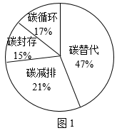
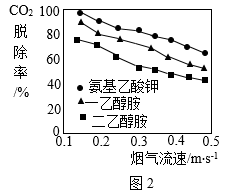
我国提出2060年前实现碳中和，彰显了负责任大国的作为与担当。实现碳中和人人有责，让我们从衣食住行点滴做起，节约能源，低碳生活。
依据文章内容问答下列问题：
（1）自然界碳的循环中，化石燃料燃烧__________(填“吸收”或“释放”)CO2。
（2）由图1可知，到2050年，对全球碳中和贡献率最大的途径是_____________。
（3）用NaOH溶液吸收CO2，发生反应的化学方程式为______________。
（4）判断下列说法是否正确(填“对”或“错”)。
①由图2可知，随烟气流速增大，CO2脱除效果增强。______________
②节约用电，绿色出行，有助于实现碳中和。______________
（5）对比图2中三条曲线，得出的结论是：在实验研究的烟气流速范围内，当烟气流速相同时，______________。
【答案】（1）释放 （2）碳替代
（3）
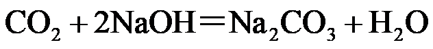
（4） ①. 错 ②. 对
（5）氨基乙酸钾对烟气中CO2的脱除效果最好
【解析】
【小问1详解】
化石燃料含碳元素，燃烧时生成二氧化碳，故填：释放；
【小问2详解】
由图1可知，碳替代对全球碳中和的贡献率是，所占比例最大，故填：碳替代；
【小问3详解】
二氧化碳和氢氧化钠反应生成碳酸钠和水，化学方程式为;;
【小问4详解】
①由图2可知，随烟气流速增大，三种物质对二氧化碳的脱除率都在降低，故随烟气流速增大，CO2脱除效果减弱，说法错误，故填：错；
②节约用电，绿色出行，可以减少化石燃料的使用，则有助于实现二氧化碳的排放，即实现碳中和，说法正确，故填：对；
【小问5详解】
对比图2中三条曲线，当烟气流速相同时，氨基乙酸钾对二氧化碳的脱除率最高，一乙醇胺次之，二乙醇胺对二氧化碳的脱除率最小，因此得出的结论是：在实验研究的烟气流速范围内，当烟气流速相同时，氨基乙酸钾对烟气中CO2的脱除效果最好，故填：氨基乙酸钾对烟气中CO2的脱除效果最好。
【生产实际分析】
31. 海水是宝贵的自然资源，从海水中提取食盐的主要过程如下图。
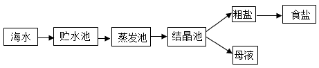
（1）食盐的主要成分是______________。
（2）蒸发池中，水蒸发属于______________(填“物理”或“化学”)变化。
（3）下列是去除粗盐中难溶性杂质的操作，正确的顺序是______________(填序号)。
A. 过滤B. 溶解C. 蒸发
【答案】（1）氯化钠##NaCl （2）物理 （3）BAC
【解析】
【小问1详解】
食盐的主要成分是氯化钠；
【小问2详解】
蒸发池中，水蒸发，只是状态的改变，无新物质生成，属于物理变化；
【小问3详解】
去除粗盐中难溶性杂质的操作是溶解、过滤、蒸发，故顺序是：BAC。
32. 硼(B)是制造火箭耐热合金的原料。镁还原法生产硼的主要工艺流程如下图。
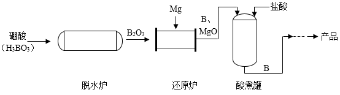
（1）脱水炉中，硼酸发生分解反应，配平该反应的化学方程式H3BO3B2O3+H2O：__________。
（2）还原炉中，发生反应的基本反应类型为_______________。
（3）酸煮罐中，加入盐酸的目的是_______________。
【答案】（1）
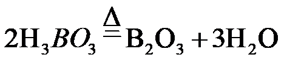
（2）置换反应 （3）除去硼中的氧化镁
【解析】
【小问1详解】
根据配平化学方程式的依据是反应前后每种原子的个数不变，生成物中含2个硼原子，故硼酸的化学计量数为2，则反应物中含6个H，故生成物中也应含6个H，故水的化学计量数为3，故填：；
【小问2详解】
根据流程图可知，还原炉中，发生的反应是氧化硼与镁在一定条件下反应生成硼和氧化镁，反应前镁是单质，氧化硼是化合物，反应后生成的硼是单质，氧化镁是化合物，符合置换反应的定义，故填：置换反应；
【小问3详解】
由氧化镁能和稀盐酸反应生成氯化镁和水，硼不与酸反应，则加入酸后可以除去硼中的氧化镁，故填：除去硼中的氧化镁。
【基本实验及其原理分析】
33. 根据下图所示实验解答问题。
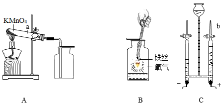
（1）A中，仪器a的名称是_______________；KMnO4分解的化学方程式为_______________。
（2）B中，铁丝燃烧生成的黑色固体是_______________。
（3）C中，电解水反应的化学方程式为_______________；一段时间后，关闭电源，将带火星的木条放在b口处，打开活塞，观察到_______________，说明有O2生成。
【答案】（1） ①. 试管 ②.
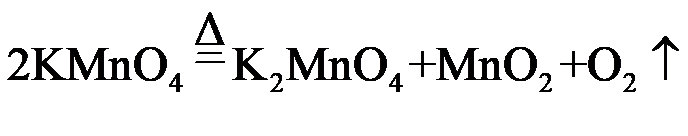
（2）四氧化三铁##Fe3O4
（3） ①.
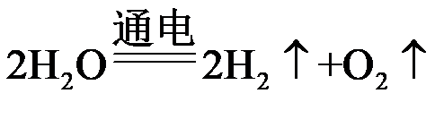
②. 带火星的木条复燃【解析】
【小问1详解】
由图可知，仪器a为试管；
高锰酸钾受热分解生成锰酸钾、二氧化锰和氧气，该反应的化学方程式为：；
【小问2详解】
铁在氧气中燃烧生成四氧化三铁，故生成的黑色固体是四氧化三铁；
【小问3详解】
水在通电的条件下反应生成氢气和氧气，该反应的化学方程式为：；
在电解水实验中，“正氧负氢”，b管与正极相连，产生的是氧气，氧气具有助燃性，故一段时间后，关闭电源，将带火星的木条放在b口处，打开活塞，观察到带火星的木条复燃，说明是氧气。
34. 用如图装置进行实验，向瓶中依次加入Na2CO3和稀硫酸，塞紧胶塞。
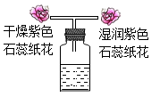
（1）瓶中发生反应的化学方程式为_______________。
（2）观察到干纸花不变色，湿纸花变红。湿纸花变红的原因是_______________。
【答案】（1）
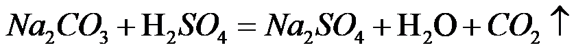
（2）二氧化碳与水反应生成碳酸，碳酸使紫色石蕊变红。
【解析】
【小问1详解】
Na2CO3和稀硫酸反应生成硫酸钠、水和二氧化碳。化学方程式
【小问2详解】
由于二氧化碳与水反应生成碳酸，碳酸显酸性，使紫色石蕊变红。所以，观察到干纸花不变色，湿纸花变红。
35. 用下图所示实验验证可燃物燃烧的条件。
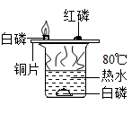
已知：白磷和红磷的着火，点分别为40℃、240℃。
（1）铜片上的白磷燃烧而红磷不燃烧，说明可燃物燃烧的条件之一是_______________。
（2）能验证可燃物燃烧需要与O2接触的现象是_______________。
（3）热水的作用是_______________。
【答案】（1）温度达到可燃物的着火点
（2）铜片上的白磷燃烧，水中的白磷不燃烧
（3）提供热量和隔绝空气
【解析】
【小问1详解】
根据资料，白磷和红磷的着火，点分别为40℃、240℃。可知白磷的着火点很低，铜片上的白磷燃烧，红磷不能燃烧，是因为白磷温度达到了着火点，而红磷没有达到着火点。故说明可燃物燃烧的条件之一是：温度达到可燃物的着火点；
【小问2详解】
铜片上的白磷温度达到着火点而燃烧，而热水中的白磷虽也达到了着火点，但未与氧气接触而不燃烧，故说明燃物燃烧需要与氧气接触。故填：铜片上的白磷燃烧，水中的白磷不燃烧；
【小问3详解】
热水的温度较高使铜片上白磷的温度达到了着火点发生燃烧，水中的白磷由于热水隔绝了氧气不能发生燃烧。故热水的作用是：提供热量和隔绝空气。
36. 如下图所示，向井穴板的孔穴1~3中滴加稀盐酸，4~6中滴加无色酚酞溶液。
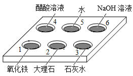
（1）1中所得溶液的颜色为_______________。
（2）从2、3中任选一个，写出发生反应的化学方程式：_______________。
（3）4、5、6中无明显现象的是_______________(填序号)。
【答案】（1）黄色 （2）
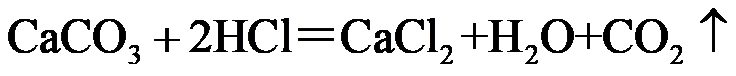
或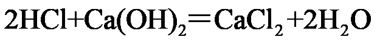
（3）4、5##5、4
【解析】
【小问1详解】
1中放的是氧化铁能与稀盐酸反应生成氯化铁和水，氯化铁溶液是黄色的，故1中所得溶液的颜色为：黄色；
【小问2详解】
2中的大理石主要成分是碳酸钙，碳酸钙和稀盐酸反应生成氯化钙、水和二氧化碳；3中的石灰水溶质是氢氧化钙，氢氧化钙与盐酸反应生成氯化钙和水，化学方程式分别为：、；
【小问3详解】
酚酞试液遇碱性溶液会变红，遇酸性或中性溶液不变色，醋酸显酸性不能是酚酞变色，水显中性不能是酚酞变色，氢氧化钠溶液显碱性能使酚酞变红，故4、5、6中无明显现象的是：4、5。
37. 用下图所示实验研究金属的性质。
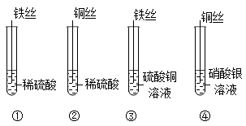
（1）①中有气体生成，生成的气体为_______________。
（2）③中反应的化学方程式为_______________。
（3）下列实验组合中，能得出铁、铜、银的金属活动性顺序的是_______________(填序号)。
A. ①④B. ③④C. ①②④
【答案】（1）氢气（或  ）
）
（2）
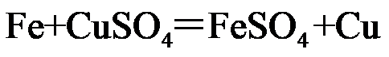
（3）BC【解析】
【小问1详解】
铁和硫酸反应生成硫酸亚铁和氢气，①中有气体生成，生成的气体为氢气（或 ）；
【小问2详解】
铁和硫酸铜反应生成铜和硫酸亚铁，反应的化学方程式为：；
【小问3详解】
实验①能说明铁的活动性大于氢，实验②能说明铜的活动性小于氢，实验③能说明铁的活动性大于铜，实验④能说明铜的活动性大于银。
A、①④证明活动性：①铁大于氢，④铜大于银，没有比较铁和铜，故不符合题意；
B、③④证明活动性：③铁大于铜，④铜大于银，因此铁>铜>银，符合题意；
C、①②④证明活动性：①铁大于氢，②铜小于氢，故铁大于铜，④铜大于银，故铁>铜>银。
故选：BC。
【科学探究】
38. 絮凝剂常用于水的净化，实验小组探究用絮凝剂净水时影响净化效果的因素。
【查阅资料】絮凝剂溶于水后能够吸附水中悬浮物并发生沉降，从而达到净水目的。硫酸铁是一种常见的絮凝剂。
【进行实验】
Ⅰ.配制水样和絮凝剂溶液
配制水样：向10L水中加入25g高岭土，搅拌、静置，取上层液作为水样。
配制絮凝剂溶液：用100mL水和5g硫酸铁进行配制。
Ⅱ.探究影响水样净化效果的因素
取水样，向其中加入絮凝剂溶液，搅拌，测定静置不同时间水样的浊度，并计算浊度去除率(浊度去除率越高代表净化效果越好)。实验记录如下：
实验序号 | 水样的体积/mL | 加入絮凝剂溶液的体积/mL | 静置时间/min | 浊度去除率/% |
① | 200 | 0 | 20 | 12.48 |
② | 200 | 0.2 | 20 | 76.54 |
③ | 200 | 0.3 | 20 | 84.60 |
④ | 200 | 0.4 | 5 | 64.45 |
⑤ | 200 | 0.4 | 10 | 70.85 |
⑥ | 200 | 0.4 | 15 | 81.04 |
⑦ | 200 | 0.4 | 20 | 86.02 |
⑧ | 200 | 0.5 | 20 | 88.15 |
⑨ | 200 | 0.6 | 20 | 86.49 |
【解释与结论】
（1）配制絮凝剂溶液的操作如下图所示。
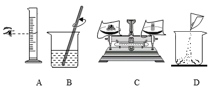
正确的操作顺序是______________(填序号)，B中用玻璃棒搅拌的目的是______________。
（2）②中浊度去除率比①高的原因是______________。
（3）依据④~⑦得出的结论是______________。
（4）探究等量水样中加入絮凝剂溶液的体积对净化效果影响的实验是______________(填序号)。
【反思与评价】
（5）依据实验数据，不能得出“静置时间相同时，等量水样中加入絮凝剂溶液的体积越大，净化效果越好”的结论，其证据是______________。
【答案】（1） ①. CDAB ②. 加快溶解速度
（2）加入了絮凝剂 （3）静置时间越长，浊度去除率越高
（4）①②③##⑦⑧⑨
（5）⑧⑨实验对比得出，两组实验中水样的质量与静置时间都相同，⑧中絮凝剂加入体积较少，浊度去除率较高
【解析】
【小问1详解】
配制絮凝剂溶液的操作为：计算出需要溶质的质量及溶剂的体积，先用天平称量出需要的絮凝剂的质量，将絮凝剂倒入烧杯中，用量筒量取需要水的体积，将水倒入烧杯中，用玻璃棒搅拌加快溶解，待全部溶解后溶液配制成功；故操作顺序为CDAB；玻璃棒搅拌的目的为加快溶解速度；
【小问2详解】
②中加入了絮凝剂，①中没有絮凝剂，则②中浊度去除率比①高；
【小问3详解】
实验④~⑦中等质量的水样中加入的絮凝剂体积也相同，根据表格数据得出静置时间越长，浊度去除率越高；
【小问4详解】
观察表格数据得出实验①②③或者实验⑦⑧⑨中水样的体积相等，静置时间相等，加入絮凝剂的体积不一样，则实验①②③或者实验⑦⑧⑨可以探究等量水样中加入絮凝剂溶液的体积对净化效果影响；
【小问5详解】
观察实验数据可以发现实验⑧与⑨可知，实验⑧中浊度去除率较高，但絮凝剂加入的体积较少，则不能得出结论“静置时间相同时，等量水样中加入絮凝剂溶液的体积越大，净化效果越好”。
【实际应用定量计算】
39. 钙在冶炼工业中具有重要的作用。可采用电解熔融氯化钙的方法生产钙，反应的化学方程式为CaCl2 Ca+Cl2↑，若制得40kgCa。请计算：参加反应的CaCl2的质量(写出计算过程及结果)。
【答案】解：设参加反应的氯化钙的质量为x
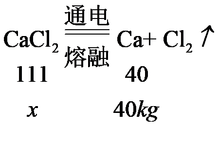
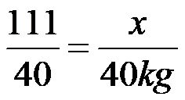
x=111kg
答：参加反应的氯化钙的质量为111kg【解析】
【详解】见答案。